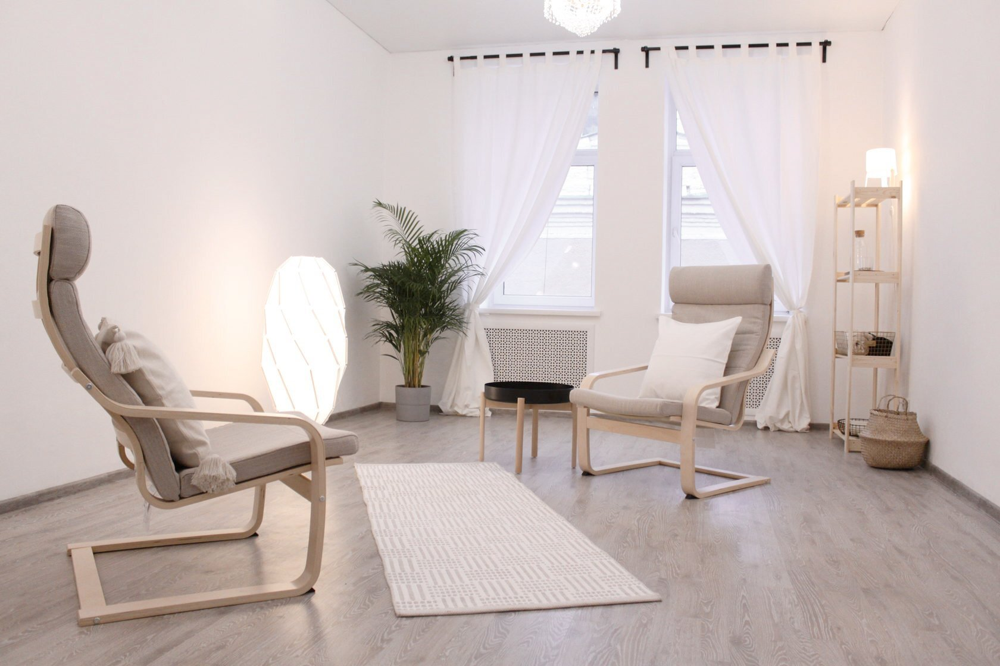
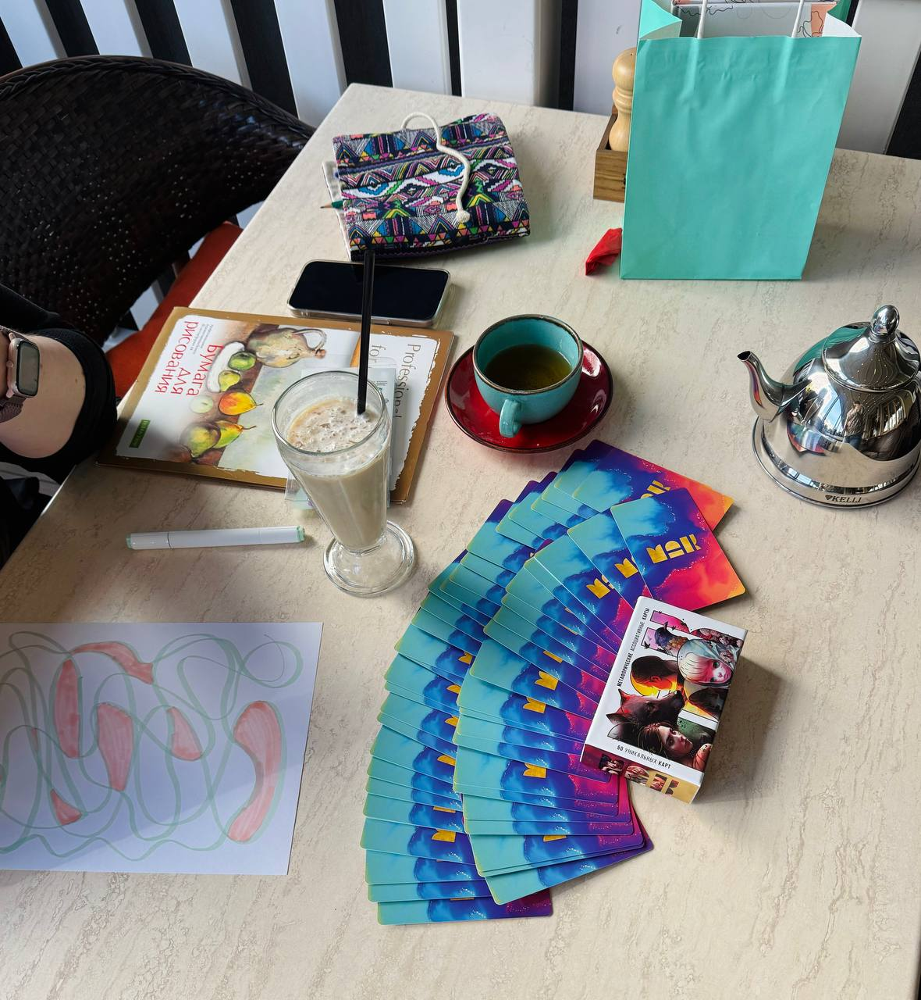
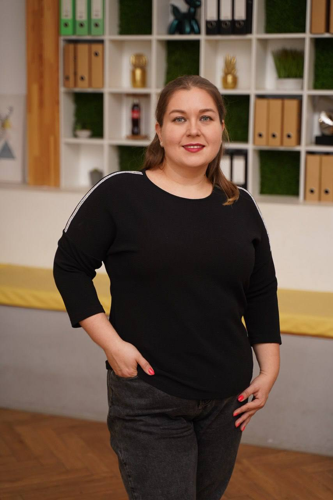

Низкая самооценка
Неловкость от похвалы, сомнения в себе, привычка обесценивать свои успехи.
Помогаю выстроить отношения с собой, близкими и деньгами
Неловкость от похвалы, сомнения в себе, привычка обесценивать свои успехи.
Партнёры, близкие, коллеги: как строить здоровые отношения и не терять себя.
Финансовый потолок, страх повышать цену, ощущение, что денег всегда не хватает.
Как отказывать без чувства вины и перестать быть удобной для всех.
Усталость, которая не проходит после отдыха, и потеря интереса к делу.
Голос, который обесценивает вас целиком, а не помогает расти.
лет работаю с людьми
часов изучения психологии, тренингов и личной терапии
программы переподготовки
года практики с клиентами и завершённая магистратура «Коучинг и психологическое консультирование»
Всё, что обсуждается на консультациях, остаётся между нами. Если случай выносится на супервизию — только обезличенно.
Вы сами решаете, нужна ли вам помощь, выполнять ли задания и что менять в жизни. Я не давлю и не «исправляю».
Опираюсь на научный подход: я кандидат экономических наук, преподаватель, привыкла проверять и обосновывать.
Подбираю методы под ваш запрос: клиент-центрированная терапия, EMDR, метафорические карты, психодрама и другие.
Начинаем с диагностической сессии: вы видите, комфортно ли вам со мной, а я — с чем именно вы пришли.
Между встречами возможны небольшие задания: изменения происходят не только на сессии, но и в жизни.
Я постоянно учусь и прохожу супервизию: более 3000 часов обучения, тренингов и личной терапии.
Первая встреча нужна не для «исправления», а чтобы мягко разобраться, что с вами происходит.
Начните с диагностической сессии — 20 минут, чтобы познакомиться и составить план работы.
Записаться на консультациюВы перестаёте обесценивать себя и опираетесь на собственные ресурсы, а не на чужое мнение.
Вы лучше понимаете себя и других, выстраиваете границы и вступаете в отношения осознанно.
Разбираем ограничивающие убеждения и финансовый потолок, растёт уверенность в доходе и ценах.
Вы видите свои сильные стороны и знаете, как применить таланты в жизни и работе.
Диагностическая сессия, 20 минут: познакомимся, определим запрос и составим план.

Онлайн или в кабинете в Москве, либо терапевтическая прогулка. Разовая встреча или пакет из 5.

Небольшие задания, метафорические карты, письменные практики: изменения переходят в жизнь.

Смотрим на результат и решаем, нужна ли дальнейшая работа или курсы для закрепления.
Вера, спасибо за то, что ты делаешь. Я, наконец, поняла, что я нормальная 😅
Отзыв клиента, анонимноПосле 3х встреч у меня стала повышаться самооценка и расти уверенность в себе.
Отзыв клиента, анонимноВера, спасибо за такой необычный опыт! С тобой было очень интересно и комфортно общаться. Такой формат, как бранч — это что-то невероятное: не только вкусно поесть в красивом месте, но и понять в себе что-то важное.
Участница «Бранча с психологом»Самокритика помогает расти, а внутренний критик только истощает. Где проходит граница.
Читать →Почему после отказа накрывает вина и как выстраивать границы, не разрушая отношения.
Читать →Какие сигналы подаёт организм заранее и с чего начать восстановление.
Читать →Выгорание и уровень тревожности: повод присмотреться к себе. Не диагностика.
Читать →Бесплатные круглосуточные телефоны доверия, если тяжело прямо сейчас.
Читать →Оставьте имя и контакт — откроется чат в Telegram с готовым сообщением, останется нажать «Отправить».